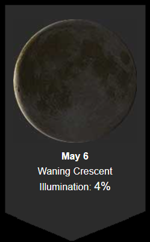

During the Waning Crescent phase of 4%, I slept late and had a bad sleep. I felt tired, angry, sad, sensitive, stressed, and in pain. I spent the day watching movies and TV shows, and trying to relax.
Despite having food available, I had no appetite. I was socially withdrawn and not productive at all. The weather averaged around 60 degrees with fog and sun. I stayed home, taking a sick day.
